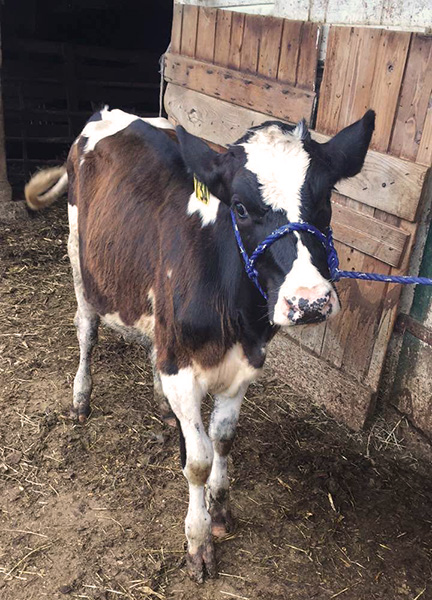

Cows, to some, are very common. The calf in the picture was a dairy calf and later went on to be shown at two county fairs. Locally, we have county fairs that have an agricultural set-up with all kinds of farm animals. Usually these animals are there to be shown for sale, but most of the community go to show their kids up close of these tame animals. A lot goes into these shows, including many hours of training and grooming, such as haircuts and bathing, of the animals to make sure their show worthy. The calf pictured was shown at the Franklin County Fair and the Shippensburg Fair. The light brown hair that was sticking out on her back was shaved, and she was all bathed up for the fair. This picture was taken during the handling training sessions we had to prepare her for the shows.
